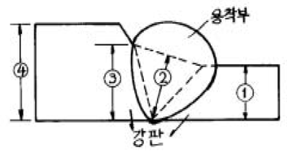
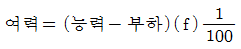
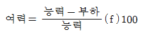
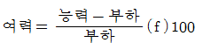

용접기능장 (2005-07-17 기출문제)
1과목: 임의구분
1. 용적 40리터인 산소 용기의 고압력계에 100 kgf/cm2으로 나타났다면 프랑스식 팁 400번으로 몇 시간 용접할 수 있겠는가? (단, 산소와 아세틸렌의 혼합비는 1:1 이다.)
- 10
- 12
- 40
- 100
(정답률: 74%)

2. 플라스마 아크용접 특징의 설명으로 옳은 것은?
- I 형 이음홈은 불가능하며, 용접봉의 소모가 많다.
- 1층으로 용접할 수 있으므로 능률적이다.
- 열적핀치 효과에 의해 열집중이 저조하다.
- 열영향부가 넓고, 용접속도가 느리다.
(정답률: 88%)
3. 용접이음부의 형태를 설계할 때 고려해야 할 사항이 아닌것은?
- 적당한 루트간격의 선택
- 용접봉이 쉽게 닿도록 할 것
- 용입이 깊은 용접법의 선택
- 용착금속량을 많게 할 것
(정답률: 81%)
4. KS에 규정된 자동 용접 시스템용 제어로봇(controlled robot)을 분류한 것중 전체궤도 또는 전체경로가 지정되어 있는 제어로봇은?
- 서보 제어로봇(servo- controlled robot)
- 논 서보 제어로봇 (nonservo-controlled robot)
- CP제어로봇 (continuous path controlled robot)
- PTP 제어로봇 (point-to-point controlled robot)
(정답률: 39%)
5. 황동에 납(Pb)1.5 - 3.0 %를 첨가한 합금은?
- 쾌삭황동
- 강력황동
- 문쯔메탈
- 톰백
(정답률: 58%)
6. 경제적인 면에서 볼 때, 드랙(drag)은 가능한 긴 편이 좋다. 따라서 절단면 끝단부가 남지 않을 정도의 드랙을 표준 드랙이라고 하는데 이것은 보통 판두께(t)의 몇 배 정도 인가?
- 1/3
- 1/5
- 1/7
- 1/10
(정답률: 77%)
7. 선박(Ship)의 노천갑판상에 산소병을 저장할 때, 태양광선의 직사를 피할 경우 최대 허용 온도는?
- 34℃
- 44℃
- 54℃
- 64℃
(정답률: 40%)
8. 열응력의 풀림 처리중에서 고온풀림에 해당하는 것은?
- 확산 풀림(diffusion annealing)
- 응력제거 풀림(stress relief annealing)
- 구상화 풀림(spheroidizing annealing)
- 프로세스 풀림(process annealing)
(정답률: 56%)
9. 전격방지기의 역할은?
- 작업을 안하는 휴지시간 동안 2차 무부하 전압을 20-30[V] 이하로 유지하여 감전을 방지할 수 있다.
- 아크 전류를 낮게 하여 전격사고를 방지한다.
- 아크 길이를 짧게 하여 용접이 잘되게 한다.
- 용접중 아크 전압을 높게 하여 감전사고를 예방한다.
(정답률: 72%)
10. Fe2N 및 Fe4N의 화합물의 질화층이 형성, 변화되지 않는 표면 경화처리법은?
- 고체침탄경화
- 가스침탄경화
- 고주파경화
- 질화법에 의한 경화
(정답률: 59%)
11. 용접부에 발생한 잔류응력을 제거하기 위해서 열거한 방법중 옳은 것은?
- 풀림처리를 한다.
- 담금질 처리를 한다.
- 서브제로 처리를 한다.
- 뜨임 처리를 한다.
(정답률: 79%)
12. 교류 아크용접기와 비교한 직류 아크용접기에 대한 설명중 옳지 못한 것은?
- 발전형 직류 아크용접기는 직류발전기이므로 완전한 직류전원이 얻어진다.
- 발전형 직류 아크용접기는 회전부에 고장이 나기 쉽고, 소음이 난다.
- 직류 용접기는 가격이, 교류 용접기 보다 저렴하다.
- 아크 안정성면에서 직류 용접기가 교류 용접기보다 우수하다.
(정답률: 73%)
13. 스테인리스강의 분류에 속하지 않은 것은?
- 고장력강계
- 마르텐사이트계
- 오스테나이트계
- 페라이트계
(정답률: 70%)
14. 아세틸렌 가스에 관한 설명이다. 틀린 것은?
- 공기보다 가볍다.
- 고압산소가 없으면 연소하지 않는다.
- 탄소와 수소의 화합물이다.
- 카바이드와 물의 화학작용으로 발생한다.
(정답률: 70%)
15. 저수소계 용접봉은 사용시 충분한 건조가 되어야 한다. 가장 알맞는 건조 온도는?
- 150 - 200℃
- 200 - 250℃
- 300 - 350℃
- 400 - 450℃
(정답률: 72%)
16. 산소 수중 절단(underwater cutting)에 대한 설명 중 맞지 않는 것은?
- 침몰선의 해체,교량의 개조 등에 사용된다.
- 지상에서 보조용팁에 점화하여 수중에 들어간다.
- 수심이 얕은 곳에서는 수소 또는 프로판을 사용하고 깊은 곳에서는 아세틸렌가스를 많이 사용한다.
- 육지에서보다 예열불꽃을 크게 하고 절단 속도도 천천히 하여야 한다.
(정답률: 74%)
17. KSB 0⑤2에서 표기되는 용접부의 모양이 아닌 것은?
- S형
- K형
- J형
- X형
(정답률: 73%)
18. 경납땜에 사용되는 용가재가 갖추어야 할 조건으로 잘못된것은?
- 모재와 친화력이 있어야 한다.
- 용융온도가 모재보다 낮고 유동성이 있어야 한다.
- 용융점에서 휘발성분이 함유되어 있어 빨리 응고해야 한다.
- 모재와 야금적 반응이 만족스러워야 한다.
(정답률: 77%)
19. 압력용기를 회전하면서 아래보기 자세로 용접하기에 적합치 않은 용접설비는?
- 스트롱 백(Strong back)
- 포지셔너(Positioner)
- 매니퓰레이터(Manipulator)
- 터닝롤러(Turning roller)
(정답률: 72%)
20. 용접기의 2차측 케이블의 구리선으로 사용되는 굵기는 몇 mm 인가?
- 0.2 - 0.5
- 0.7 - 1.0
- 1.1 - 1.5
- 1.6 - 2.0
(정답률: 39%)
2과목: 임의구분
21. E4313-AC-5-400은 연강용 피복아크 용접봉의 규격을 표시한 것 중 규격 설명이 잘못된 것은?
- E : 전기용접봉
- 43 : 용착금속의 최저인장강도
- 13 : 피복제의 계통
- 400 : 용접전류
(정답률: 74%)
22. 금속가공은 열간가공과 냉간가공으로 나누는 데 그 기준이 되는 것은?
- 재결정 온도
- 동소 변태점
- 풀림 온도
- 자기 변태점
(정답률: 66%)
23. 교류 용접기에서 무부하전압 80V, 아크전압 30V, 아크전류 200A를 사용할 때 내부손실 4㎾라면 용접기의 효율은?
- 70%
- 40%
- 50%
- 60%
(정답률: 32%)
24. 현재 비행기, 자동차, 철도차량 등의 제조에 널리 쓰이며 로보트에 의한 자동용접에 이용되고 있는 점용접(spot welding)의 3대 요소에 해당되지 않는 것은?
- 가압력
- 전극의 형상
- 전류의 세기
- 통전시간
(정답률: 74%)
25. 피복아크용접에서 아크쏠림 방지대책 중 맞는 것은?
- 교류용접기로 하지말고 직류용접기로 할 것
- 아크길이를 다소 길게 할 것
- 접지점은 한 개만 연결 할 것
- 용접봉 끝을 아크쏠림 반대방향으로 기울일 것
(정답률: 73%)
26. 용접비드 끝에서 오목하게 패인 곳으로, 불순물과 편석이 발생하기 쉽고 냉각중에는 균열을 일으킬 가능성이 큰 것은?
- 스패터(spatter)
- 크레이터(crater)
- 자기쏠림
- 은점
(정답률: 84%)
27. 알루미늄합금 중 두랄루민에 Cu, Mg, Mn를 증가시켜 항공기 구조재 및 리벳재료로 사용되는 것은?
- 신두랄루민
- 하이드로날륨
- Y합금
- 초두랄루민
(정답률: 46%)
28. 침투탐상 검사에서 그 특징의 설명으로 틀린 것은?
- 시험방법이 간단하다.
- 제품의 크기, 형상 등에 제한을 받는다.
- 미세한 균열 탐상도 가능하다.
- 침투제가 오염되기 쉽다.
(정답률: 45%)
29. 지그(Jig)설계의 목적이 아닌 것은?
- 공정수가 늘어나고 생산능률이 향상된다.
- 제품의 정밀도가 증가한다.
- 경제적 생산이 가능하다.
- 불량이 적고 미숙련공도 작업이 용이하다.
(정답률: 79%)
30. 그림과 같은 용접 이음강도 계산시 어느것을 기준으로 하여 계산하는가?

- 릿번
- 립번
- 림번
- 링번
(정답률: 53%)
31. 가공된 금속을 재 가열할 때 성질 및 조직변화의 순서, 즉 재 결정순서가 맞는 것은?
- 내부응력의 제거 → 연화 → 재결정 → 결정입자의 성장
- 연화 → 재결정 → 결정입자의 성장 → 내부응력의 제거
- 결정입자의 성장 → 연화 → 내부응력의 제거 → 재결정
- 재결정 → 결정입자의 성장 → 내부응력의 제거 → 연화
(정답률: 50%)
32. 피복 아크 용접에서 직류 정극성을 표시한 것은?
- DCRP에서는 용접봉(-)극, 모재(+)극
- DCSP에서는 용접봉(+)극, 모재(-)극
- DCSP에서는 용접봉(-)극, 모재(+)극
- AC에서는 용접봉(+)극, 모재(-)극
(정답률: 53%)
33. 용접작업시 피닝(Peening)을 하는 가장 큰 이유는?
- 모재의 연성을 높인다.
- 급냉을 방지한다.
- 모재의 경도를 높인다.
- 잔류응력을 줄인다.
(정답률: 74%)
34. 다음은 아크 에어가우징(Arc air gouging)과 가스가우징을 비교한 작업 능률이다. 아크 에어가우징은?
- 작업 능률이 가스가우징과 대략 동일하다.
- 작업 능률이 가스가우징 보다 1.5배이다.
- 작업 능률이 가스가우징 보다 2 - 3배이다.
- 작업 능률이 가스가우징 보다 4 - 6배이다.
(정답률: 73%)
35. 산소의 양이 적고, 아세틸렌의 양이 많은 상태를 아세틸렌과잉 불꽃이라고도 한다. 이 불꽃은 금속표면에 침탄작용을 일으키기 쉬운데, 그 명칭은?
- 중성불꽃
- 질화불꽃
- 산화불꽃
- 탄화불꽃
(정답률: 73%)
36. 아크용접 전원의 외부 특성으로 부하전류 증가시 단자 전압은 낮아지는 특성을 나타내며, 아크를 안정하게 유지시키는 특성은?
- 수하특성
- 정전압특성
- 동전류특성
- 역극성특성
(정답률: 58%)
37. 피복아크 용접봉 중 저수소계 용접봉인 것은?
- E4301
- E4313
- E4316
- E4324
(정답률: 78%)
38. 청동에 대한 설명 중 틀린 것은?
- 구리와 주석의 합금이다.
- 포금은 청동의 일종이다.
- 내식성이 나쁘다.
- 내마멸성이 좋다.
(정답률: 75%)
39. 필릿용접 이음부의 루트 부분에 생기는 저온균열로 모재의 열팽창 및 수축에 의한 비틀림이 주원인이 되는 균열의 명칭은?
- 비드 밑 균열
- 루트 균열
- 힐 균열
- 병배 균열
(정답률: 61%)
40. 플래시 용접기를 속도제어 방식에 따라 분류하였다. 틀린것은?
- 광학식 플래시 용접기
- 수동식 플래시 용접기
- 공기 가압식 플래시 용접기
- 유압식 플래시 용접기
(정답률: 29%)
3과목: 임의구분
41. 두꺼운 판을 용접하기 위해 AW 400 용접기가 설치되어 있다. 정격 사용률은 50[%] 이고, 280[A]의 전류로 작업할 때, 허용 사용률은 몇 [%] 인가?
- 72
- 82
- 92
- 102
(정답률: 40%)
42. 내 균열성이 가장 좋은 용접봉은?
- 고산화 티탄계
- 저 수소계
- 고 셀룰로우스계
- 철분 산화티탄계
(정답률: 73%)
43. 테르밋 용접에서 산화철과 알루미늄이 반응할때 생성되는 화학반응이 일어날 때의 온도는 다음 중 약 몇도(℃)나 되는가?
- 2000
- 2800
- 4000
- 5800
(정답률: 56%)
44. 피복 아크 용접봉의 피복 배합제 중 아크 안정제는?
- 탄산마그네슘
- 젤라틴
- 석회석(CaCO3)
- 망간
(정답률: 45%)
45. 용접 후 변형을 교정하는 방법이 아닌 것은?
- 박판에 대한 점 수축법
- 형재에 대한 직선 수축법
- 가열 후 해머링 하는 방법
- 두꺼운 판에 대하여 냉각 후 가열하는 방법
(정답률: 62%)
46. 다음 중에서 엔드탭(end tap)을 붙여서 시공해야 하는 용접법은?
- 심용접
- TIG 용접
- 서브머지드용접
- 아크 점용접
(정답률: 81%)
47. 탄산가스 아크 용접 작업에서 용접 진행방향에 대한 토치 각도에 따라 전진법과 후진법이 구분되는 데, 전진법에 대해 설명한 것 중 틀린 것은?
- 토치각은 용접 진행 반대쪽으로 15∼20°로 유지한다.
- 용접선이 잘 보이므로 운봉을 정확하게 할 수 있다.
- 비드 높이 높고, 폭이 좁은 비드를 얻는다.
- 스패터가 비교적 많다.
(정답률: 73%)
48. 용접성(weldability) 시험법에 속하는 것은?
- 화학분석시험
- 부식시험
- 노치취성시험
- 파면시험
(정답률: 49%)
49. 알루미늄이 철강에 비하여 용접이 어려운 이유로서 옳지 못한 것은?
- 비열 및 열전도도가 크다.
- 용융점이 높다.
- 지나친 융해가 되기 쉽다.
- 팽창계수가 매우 크다.
(정답률: 55%)
50. 용접 이음을 설계할 때의 주의사항 중 틀린 것은?
- 맞대기 용접에서는 뒷면 용접을 할 수 있도록 해서 용입부족이 없도록 한다.
- 용접 이음부가 한곳에 집중하지 않도록 설계 한다.
- 맞대기용접은 가급적 피하고 필릿 용접을 하도록 한다.
- 아래보기 용접을 많이 하도록 설계 한다.
(정답률: 76%)
51. 인체에 전류가 흐르면서 심한 고통을 느끼는 최소 전류값은 몇 mA인가?
- 5
- 10
- 20
- 50
(정답률: 31%)
52. 각종 금속의 용접에서 서브머지드 아크 용접에 보통 사용되지 않는 재료는?
- 고니켈합금
- 저탄소강
- 주강
- 티탄
(정답률: 48%)
53. 용접부의 초음파 검사에 대한 특징 중 틀린 것은?
- 표면균열의 검출이 양호하다.
- 결함의 판두께 방향의 위치 추정이 용이하다.
- 탐상결과를 즉시 알 수 있으며 자동탐상이 가능하다.
- 검사물의 편면에서만 접촉이 가능하면 검사가 가능하다.
(정답률: 49%)
54. 다음 중 국부 표면경화 처리법인 것은?
- 고주파 유도경화법
- 구상화 처리법
- 강인화 처리법
- 결정입자 처리법
(정답률: 48%)
55. 다음 데이터로부터 통계량을 계산한 것 중 틀린 것은?
- 중앙값(Me) = 24.3
- 제곱합(S) = 7.59
- 시료분산(s2) = 8.988
- 범위(R) = 7.6
(정답률: 41%)
56. 생산보전(PM:Productive Maintenance)의 내용에 속하지 않는 것은?
- 사후보전
- 안전보전
- 예방보전
- 개량보전
(정답률: 48%)
57. 다음 중에서 작업자에 대한 심리적 영향을 가장 많이 주는 작업측정의 기법은?
- PTS법
- 워크 샘플링법
- WF법
- 스톱 워치법
(정답률: 55%)
58. 여력을 나타내는 식으로 가장 올바른 것은?
- 여력 = 1일 실동시간 × 1개월 실동시간 × 가동대수



(정답률: 58%)
59. 다음 중 계량치 관리도는 어느 것인가?
- R 관리도
- nP 관리도
- C 관리도
- U 관리도
(정답률: 52%)
60. 다음 중 로트별 검사에 대한 AQL 지표형 샘플링검사 방식은 어느 것인가?
- KS A ISO 2859-0
- KS A ISO 2859-1
- KS A ISO 2859-2
- KS A ISO 2859-3
(정답률: 46%)
산소 용기의 용적이 40리터이므로, 100 kgf/cm2의 고압력으로 약 10시간 동안 용접이 가능하다. 따라서 정답은 "10"이다.